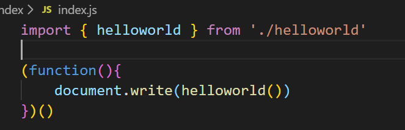
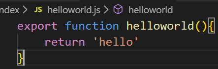
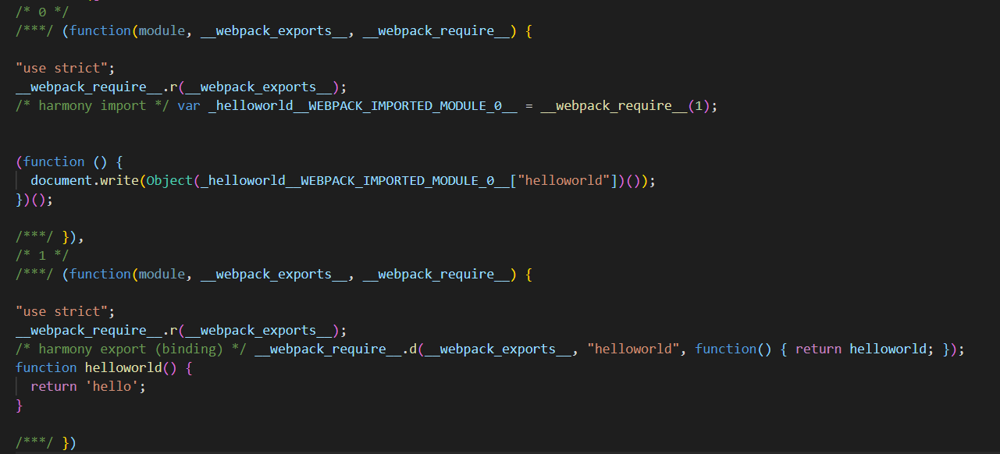
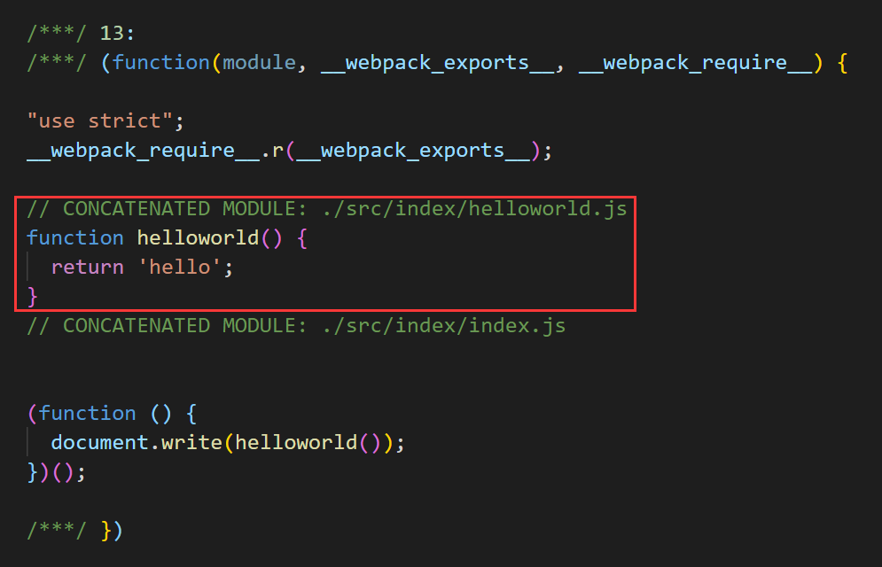

本文介绍了 webpack 中的 Scope Hoisting。
现象
在使用 webpack 构建后，如果查看其构建完成的 bundle 文件，会发现其中存在大量的闭包代码：
源码：


构建后的代码：

可以看到，一个模块在经过 webpack 转换过后，会带上一层包裹，同时 import 会被转换成 __webpack_require__ 调用；export 也会转换成调用 __webpack_require__.d（就是在模块上定义一个 getter 函数），并且加上注释 /* harmony export (binding) */。
由于大量的作用域包裹代码，会导致体积增大，并且模块越多越明显。同时，运行时创建的函数作用域变多，内存开销变大。
进一步分析
一个构建完成的文件格式如下：
1 | ;(function (modules) { // 入口 |
可以看到，构建出来的是一个IIFE(匿名闭包函数)，modules是一个数组，每项都是一个模块初始化函数。
Scope Hoisting 原理
将所有模块的代码按照引用顺序放在一个函数作用域里，然后适当的重命名一些变量以防止变量名冲突。
可以简单的把 Scope Hoisting 理解为是把每个模块被 webpack 处理成的模块初始化函数整理到一个统一的包裹函数里，也就是把多个作用域用一个作用域取代，以减少内存消耗并减少包裹块代码，从每个模块有一个包裹函数变成只有一个包裹函数包裹所有的模块，但是有一个前提就是，当模块的引用次数大于1时，比如被引用了两次或以上，那么这个效果会无效，也就是被引用多次的模块在被 webpack 处理后，会被独立的包裹函数所包裹，因为如果一个模块引用次数大于1次，那么这个模块的代码会被内联多次，从而增加了打包出来的 js bundle 的体积。
Scope Hositing 使用
在 webpack 中，设置 mode: 'production' 之后，就默认添加了插件webpack.optimize.ModuleConcatenationPlugin()，开启了 Scope Hoisting。
使用前后对比：
使用前：
使用后：
